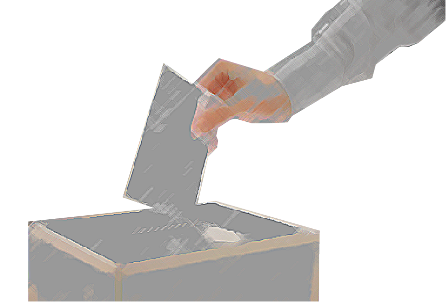
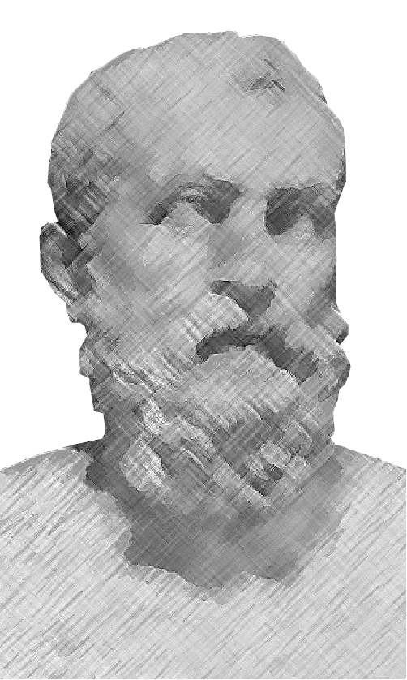

What is Democracy?
Democracy is a form of government in which the common people hold equal shares of political power and can rule either directly or through elected representatives. The common people, or citizens, exercise this power by voting. In a democracy the outcome of the state being governed depends on what these citizens do, so no single person or force can control the state.
How Did Democracy Begin?
Many experts consider Athens, Greece, the birthplace of democracy. Athens was founded in the 7th century BCE and, like most Greek cities during that time, was controlled by a single powerful ruler. This political domination created many economic, political, and social problems in Athens, leading to the enslavement of most of the Athenian people. Around the 6th century, with many neighboring cities experiencing political revolutions, the people of Athens rose up and demanded political reform. During this political unrest, they turned to Greek lawmaker Solon, who created a system in which people of all socioeconomic standings had equal say in the government through direct vote on Athenian laws. Thus began democracy.
What are the Two
Main Types of Democracy?
The first of the two main types of democracy is a direct democracy. A
direct democracy places all the political power in the hands of the
individual. When lawmaking occurs, all members of a state gather and vote
together, with each person given an equal chance to directly influence the
laws of the state. In practice, this type of democracy is hard to implement
because of the size of modern states, leadning to an inability for all
citizens to gather and make decisions together.
The second main type of democracy is a representative democracy. This system
places a person or a group in between the public and the lawmaking process of
a state. Through the voting process, one person or a group of people are elected
to make decisions on behalf of the group of citizens that they represent. This is the
most common form of democracy today, with a prime example being the United States.
Democracy Quiz!
The correct answers will appear once you drag the last item. Good luck!